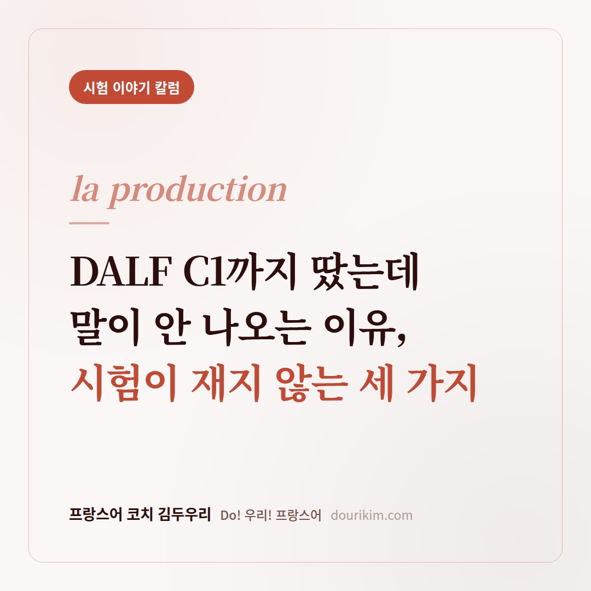
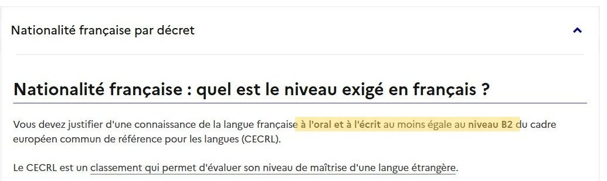
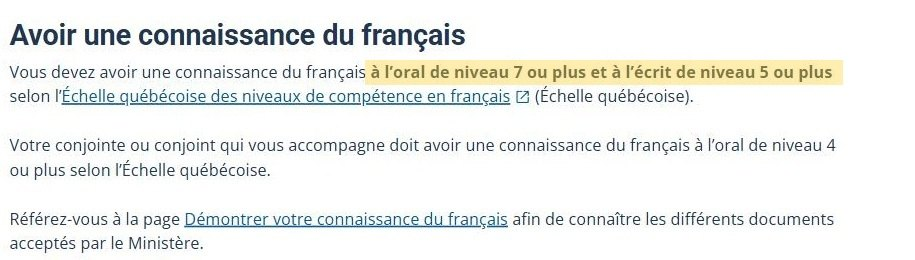
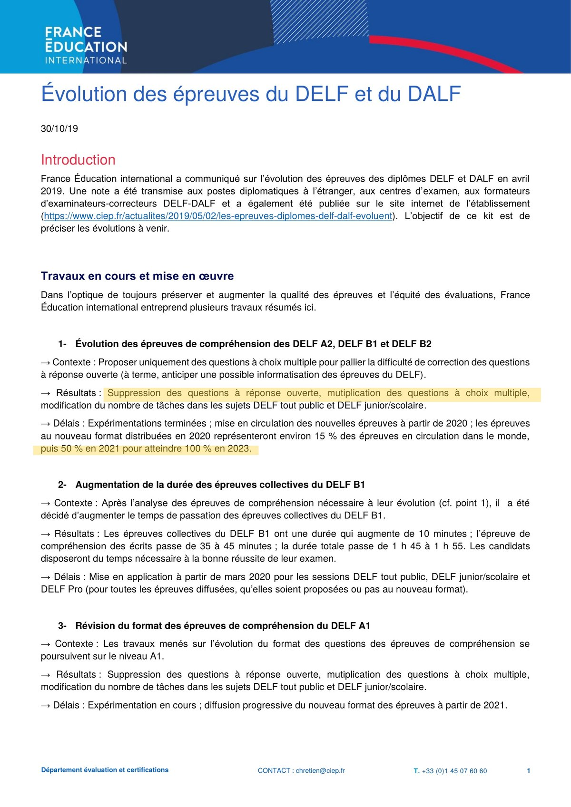
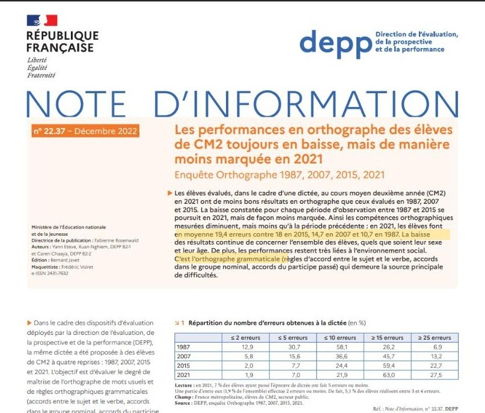
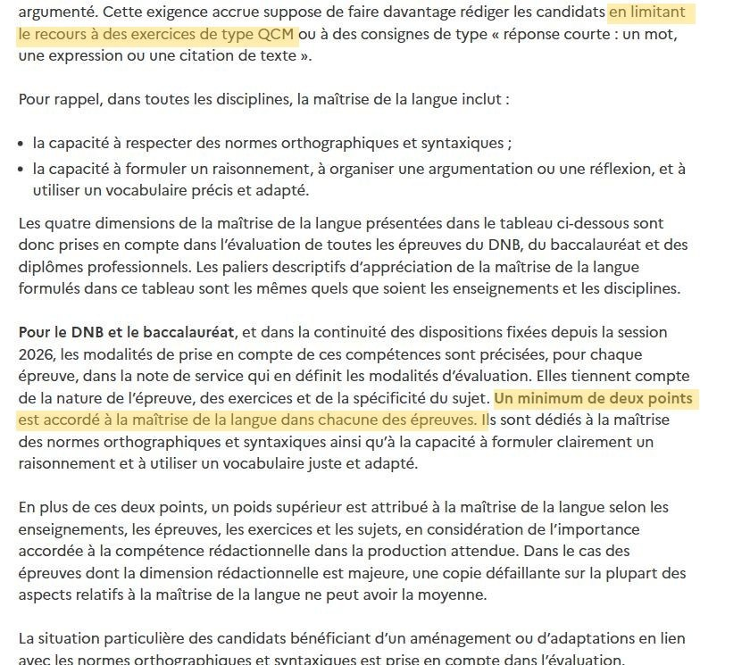

📝 시험 이야기
DALF C1까지 땄는데 말이 안 나오는 이유,
시험이 측정하지 않는 3가지
이미 DELF B2, DALF C1 자격증이 있으신 분들로부터
프랑스어 수업 문의를 종종 받습니다.
그분들의 공통적인 고충은 "아직도 말하는 게 힘들다"

먼저 읽는 요약
DELF와 DALF는 2020년부터 듣기와 읽기의 주관식을 없앴고 2023년에 전환이 끝났습니다. 시험이 쉬워진 게 아니라, 생산 능력을 재던 자리가 사라진 것입니다. 고르는 훈련으로도 합격증은 나오지만, 그 훈련에 생산이 없으면 거리는 그대로 남습니다.
- 2026년부터 체류와 국적에 요구되는 프랑스어 수준이 올라간 것
- DELF, DALF 개편으로 실제로 사라진 문항
- 프랑스 원어민의 받아쓰기 오류가 34년간 1.8배 늘어난 것
- 프랑스 정부가 2027년 시험부터 내놓은 답
- 시험이 측정하지 않는 세 가지
이 글을 읽으시면서 "이거 나인데?" 하시는 분들이 꽤 계실 거예요. 요즘 DALF C1이나 B2를 준비하시는 분이 부쩍 늘었는데, 이유가 있습니다. 2026년 1월부터 프랑스가 체류와 국적에 요구하는 프랑스어 수준을 한 단계씩 올렸거든요.

캐나다와 퀘벡은 아예 프랑스어 교육(francisation)을 국가가 직접 확대하면서, 프랑스어 능력이 영주권 경로를 여는 조건이 됐고요.

그러니까 지금은 프랑스어 자격증이 자기만족이 아니라 체류와 이민의 관문이 된 시기입니다.
DALF C1 시험도 그만큼 어려워졌을까요
저도 유년기 시절에 이 시험을 쳤었습니다. 지금은 코치로서 학생들과 시험을 함께 준비하고 있고요. 그러면서, 또 소셜 미디어에 올라오는 시험 결과 피드백을 보면서 점점 의문이 생기기 시작했어요. 실제로 시험 난이도가 낮아졌나?
DELF나 DALF가 쉬워졌다고 공식적으로 말한 기관은 없습니다. 다만 아래 문서들은 분명히 변화가 있었다는 걸 보여줘요.

DELF와 DALF를 만드는 기관이 직접 낸 개편 문서입니다. 듣기와 읽기에서 직접 써서 답하던 문항이 전부 빠지고 객관식만 남았어요.
언어 시험은 크게 두 가지를 봅니다.
- 이해 능력 듣고 읽고 알아듣는 것
- 생산 능력 내가 직접 말하고 쓰는 것
이 개편으로 사라진 쪽은 생산 능력을 재던 지점이에요. 사유도 같은 줄에 적혀 있습니다. 채점이 어려워서, 그리고 장차 전산화를 대비해서. 난이도를 낮추려는 게 아닙니다. 지문 개수는 오히려 늘었어요. DELF B1 읽기는 35분에서 45분이 됐고요.
시험이 쉬워진 게 아니라,
생산 능력을 재는 비중이 줄었습니다.
2020년 3월 시험부터 단계적으로 적용돼서 2023년에 100% 전환이 끝났습니다. 지금 DALF C1을 보시면 무조건 새 형식이에요. TCF도 같은 흐름이에요. 필수 3영역이 전부 객관식이고, 작문과 말하기는 선택입니다.
왜 하필 프랑스어에서 더 문제일까
프랑스어는 문법의 상당 부분이 소리로 드러나지 않는 언어예요. 그래서 문자로만 공부하면 그 구분이 눈에만 남습니다. 귀와 입까지 넘어오지 않아요.
고르는 훈련만으로도 합격증은 나옵니다. 다만 그 훈련에 생산이 없으면 그 거리는 줄지 않고 그대로 남아요.
이건 외국인 학습자만의 문제가 아닙니다
올해 9월 PISA 2025에서 프랑스 15세 학생의 읽기 점수는 456점, 역대 최저였습니다. 2022년 474점에서 18점이 떨어졌어요.
프랑스 교육부 장관은 결과를 두고 « C'est préoccupant »(우려스럽다)라고 표현했습니다. 그리고 이건 시험 점수만의 문제가 아니에요.

DEPP는 프랑스 교육부 산하 통계기관입니다. 학력 평가와 교육 통계를 담당하며, 정기 간행물인 정보보고서로 결과를 발표합니다. 프랑스 교육부가 똑같은 받아쓰기 지문을 1987년부터 네 번 냈습니다.
- 평균 오류 10.7개 → 19.4개 (34년간 약 1.8배)
- 25개 이상 틀린 학생 6.9% → 27.5% (약 4배)
원어민도 똑같이 틀립니다. 받아쓰기는 생산 능력을 재는 가장 단순한 도구예요. 그게 내려앉고 있다는 뜻이죠.
그래서 프랑스 정부가 한 일

2027년 시험부터는 브르베도, 바칼로레아도, 직업계 자격증도 국어 과목에서만 언어를 보지 않습니다. 전 과목에서 봅니다. 언어가 미흡하면 그 답안은 평균점을 받을 수 없어요.
여기서 같은 문서의 맨 윗줄을 같이 보셔야 합니다. 객관식을 줄이고 더 쓰게 하라고 적혀 있어요. 받아쓰기 오류가 두 배 가까이 늘어난 나라가 꺼낸 답이 이겁니다. 이해를 더 시키는 게 아니라, 생산을 더 시키는 것. 우리가 치는 DELF, DALF, TCF 시험은 반대로 갔는데도요.
프랑스 사람들은 어떻게 배울까
아주 놀랍게도 제가 학생분들에게 강조하는 받아쓰기(dictée)입니다. 프랑스어를 배우는 외국인이기 때문에 중요성을 알려드린 게 아니었어요.
2024년에 개정된 프랑스 초등 교육과정을 보면 「매일, 모든 학생이」라는 항목 아래 "배운 내용과 연결된 받아쓰기를 한다"가 들어가 있어요. 프랑스어는 귀로 들은 것과 손으로 쓰는 것 사이에 계속 틈이 생기는 언어라서 그렇습니다.
프랑스 아이들은 초등학교 때부터 6년, 10년을 합니다. 어른들에게도 받아쓰기는 하나의 언어 놀이로 자리 잡았고요. 저희는 한국에서 관습적으로 그 과정을 건너뛰고, 문법책과 객관식 문제집으로 푸는 경우도 많죠.
시험이 측정하지 않는 세 가지
- 준비 시간 없이 나오는 말 시험은 1시간 준비 후 발표예요
- 소리로 구분하는 문법 고르는 문제에는 소리가 없습니다
- 상황에 맞는 말투(레지스터) 답안지는 한 가지 톤뿐이죠
DALF C1이든 B2든, 목표를 위해 자격증을 손에 넣는 건 쉬운 일이 아닙니다. 그 과정을 끝까지 통과하신 것만으로 충분히 대단한 일이에요. 저는 프랑스어 공부가 여기서부터 시작이라고 생각합니다.
문제 유형을 맞히려고 읽는 게 아니라 궁금해서 읽는 때, 채점표에 맞추려고 쓰는 게 아니라 하고 싶은 말을 프랑스어 감각으로 구사하는 시기가 온 거예요.
방향은 알겠는데 혼자 어떻게 할까
올바른 입문부터, 프랑스어로 생각하기를 의도한 인강을 만들었습니다. CLE International의 Grammaire Progressive du Français 교재를 제 방식으로 다시 읽어, A1부터 C1까지 40여 챕터를 다룹니다. 문법책을 차례대로 짚어 주는 강의는 아니에요. 다른 점이 세 가지 있습니다.
- 첫째, 레지스터를 같이 다룹니다. 같은 내용을 일상에서 어떻게 말하고, 친한 친구와의 대화에서는 어떻게 말하고, 시험 답안과 보고서에서는 어떻게 쓰는지 나눠서 익힙니다. DALF C1 이후에 벽에 부딪히는 지점이 대부분 여기예요.
- 둘째, 시제를 표가 아니라 소리로 가르칩니다. 프랑스어에서 안 들리는 문법을 들리게 만드는 게 먼저입니다.
- 셋째, 프랑스 사람이 모국어를 배우는 순서를 따라갑니다. 받아쓰기, 소리 먼저, 구조 이해. 프랑스 교육과정이 실제로 하는 순서예요.
저는 프랑스에서 고등과정과 대학을 마치고, 현지에서 일까지 10년을 보냈습니다. 프랑스 사람들이 실제로 공부하는 방식을 외국어로서의 프랑스어(FLE) 학습에 그대로 적용한 강의예요.
김두우리, 16년차 프랑스어 FLE 전문 코치
한국 학생들이 어디서 막히는지 아는 사람이 씁니다. 1:1 맞춤 수업과 한불 통번역을 합니다.이력 보기
관련 칼럼